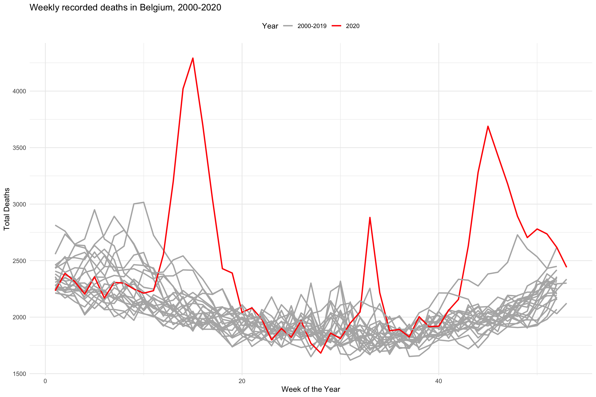
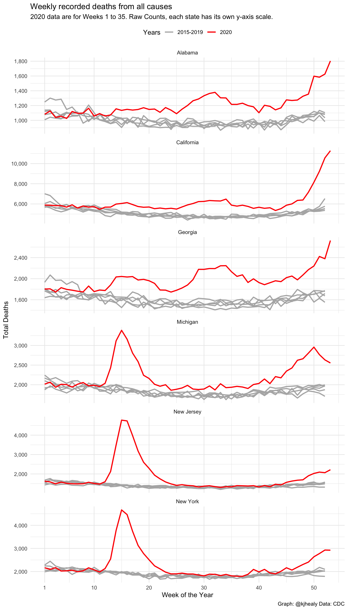

library(tidyverse)
#> ── Attaching packages ─────────────────────────────────────── tidyverse 1.3.1 ──
#> ✔ ggplot2 3.3.3 ✔ purrr 0.3.4
#> ✔ tibble 3.1.1 ✔ dplyr 1.0.5
#> ✔ tidyr 1.1.3 ✔ stringr 1.4.0
#> ✔ readr 1.4.0 ✔ forcats 0.5.1
#> ── Conflicts ────────────────────────────────────────── tidyverse_conflicts() ──
#> ✖ dplyr::filter() masks stats::filter()
#> ✖ dplyr::lag() masks stats::lag()
library(covdata)
#>
#> Attaching package: 'covdata'
#> The following object is masked from 'package:datasets':
#>
#> uspopThe Human Mortality Database provides weekly death counts and rates by age groups for a number of countries. Age groups are standardized across countries. Rate calculations are also standardized. The standardization of age categories means that weekly “counts” may not be whole numbers. See the HMD Data Note for details on the data sources and calculation of rates. In particular, note the following, from p.2 of the codebook:
In general, the STMF is based on the data that are collected for the core HMD. The HMD follows certain criteria for inclusion of individual countries such as requirements for maintaining high quality statistical systems and having the completeness of registration of vital events close to 100 percent. Nevertheless, the weekly statistics has own specific which should be taken into account. 1) The data on deaths are provided by the date of registration or date of occurrence. There is no way to convert the date of registration into the date of occurrence. The exact type of the data and further details are indicated in the metadata file. 2) If the data are provided by date of registration, there could be artificial fluctuations in weekly death figures related to special events (e.g. end of the statistical period, public holidays). 3) The data for last weeks of a year as well as data for all weeks of the most recent year might be incomplete due to a delayed registration. Statistical offices may still revise these data in the course of the next update. 4) Deaths and death rates are provided by calendar week starting from Monday, Saturday or Sunday (depending on country-specific standards). Please check the country-specific documentationfor details. 5) Each year in the STMF refers to 52 weeks, each week has 7 days. In some cases, the first week of a year may include several days from the previous year or the last week of a year may include days (and, respectively, deaths) of the next year. In particular, it means that a statistical year in the STMF is equal to the statistical year in annual country-specific statistics. The data in the STMF are presented without any corrections. The original data are notadjusted for death undercounts or smoothed. All known country-specific quality issues are documented in the country- specific metadata file.
stmf
#> # A tibble: 510,375 x 17
#> country_code cname iso2 continent iso3 year week sex split split_sex
#> <chr> <chr> <chr> <chr> <chr> <dbl> <dbl> <chr> <dbl> <dbl>
#> 1 AUS Austral… AU Oceania AUS 2015 1 m 1 0
#> 2 AUS Austral… AU Oceania AUS 2015 1 m 1 0
#> 3 AUS Austral… AU Oceania AUS 2015 1 m 1 0
#> 4 AUS Austral… AU Oceania AUS 2015 1 m 1 0
#> 5 AUS Austral… AU Oceania AUS 2015 1 m 1 0
#> 6 AUS Austral… AU Oceania AUS 2015 1 f 1 0
#> 7 AUS Austral… AU Oceania AUS 2015 1 f 1 0
#> 8 AUS Austral… AU Oceania AUS 2015 1 f 1 0
#> 9 AUS Austral… AU Oceania AUS 2015 1 f 1 0
#> 10 AUS Austral… AU Oceania AUS 2015 1 f 1 0
#> # … with 510,365 more rows, and 7 more variables: forecast <dbl>,
#> # approx_date <date>, age_group <chr>, death_count <dbl>, death_rate <dbl>,
#> # deaths_total <dbl>, rate_total <dbl>
stmf %>%
filter(sex == "b", country_code == "BEL") %>%
group_by(year, week) %>%
mutate(yr_ind = year %in% 2020) %>%
slice(1) %>%
ggplot(aes(x = week, y = deaths_total, color = yr_ind, group = year)) +
geom_line(size = 0.9) +
scale_color_manual(values = c("gray70", "red"), labels = c("2000-2019", "2020")) +
labs(x = "Week of the Year",
y = "Total Deaths",
color = "Year",
title = "Weekly recorded deaths in Belgium, 2000-2020") +
theme_minimal() +
theme(legend.position = "top")
nchs_wdc
#> # A tibble: 274,806 x 7
#> jurisdiction year week week_ending_date cause_detailed n cause
#> <chr> <dbl> <dbl> <date> <chr> <dbl> <chr>
#> 1 Alabama 2014 1 2014-01-04 All Cause 1057 All Cau…
#> 2 Alabama 2014 1 2014-01-04 Alzheimer disease (… 38 Alzheim…
#> 3 Alabama 2014 1 2014-01-04 Cerebrovascular dis… 51 Cerebro…
#> 4 Alabama 2014 1 2014-01-04 Chronic lower respi… 66 Chronic…
#> 5 Alabama 2014 1 2014-01-04 Diabetes mellitus (… 29 Diabetes
#> 6 Alabama 2014 1 2014-01-04 Diseases of heart (… 264 Disease…
#> 7 Alabama 2014 1 2014-01-04 Influenza and pneum… 38 Influen…
#> 8 Alabama 2014 1 2014-01-04 Malignant neoplasms… 196 Cancer
#> 9 Alabama 2014 1 2014-01-04 Natural Cause 992 Natural…
#> 10 Alabama 2014 1 2014-01-04 Nephritis, nephroti… 21 Kidney …
#> # … with 274,796 more rows
nchs_wdc %>%
filter(jurisdiction %in% c("New York", "New Jersey", "Michigan", "Georgia", "California", "Alabama")) %>%
filter(cause == "All Cause", year > 2014, year < 2021) %>%
group_by(jurisdiction, year, week) %>%
summarize(deaths = sum(n, na.rm = TRUE)) %>%
mutate(yr_ind = year %in% 2020) %>%
ggplot(aes(x = week, y = deaths, color = yr_ind, group = year)) +
geom_line(size = 0.9) +
scale_color_manual(values = c("gray70", "red"), labels = c("2015-2019", "2020")) +
scale_x_continuous(breaks = c(1, 10, 20, 30, 40, 50), labels = c(1, 10, 20, 30, 40, 50)) +
scale_y_continuous(labels = scales::comma) +
facet_wrap(~ jurisdiction, scales = "free_y", ncol = 1) +
labs(x = "Week of the Year",
y = "Total Deaths",
color = "Years",
title = "Weekly recorded deaths from all causes",
subtitle = "2020 data are for Weeks 1 to 35. Raw Counts, each state has its own y-axis scale.",
caption = "Graph: @kjhealy Data: CDC") +
theme_minimal() +
theme(legend.position = "top")
#> `summarise()` has grouped output by 'jurisdiction', 'year'. You can override using the `.groups` argument.
The New York Times has begun to collate short term mortality counts in an effort to calculate excess deaths for various countries and regions.
nytexcess
#> # A tibble: 7,258 x 12
#> country placename frequency start_date end_date year month week deaths
#> <chr> <chr> <chr> <date> <date> <chr> <int> <int> <int>
#> 1 Austria <NA> weekly 2020-01-06 2020-01-12 2020 1 2 1702
#> 2 Austria <NA> weekly 2020-01-13 2020-01-19 2020 1 3 1797
#> 3 Austria <NA> weekly 2020-01-20 2020-01-26 2020 1 4 1779
#> 4 Austria <NA> weekly 2020-01-27 2020-02-02 2020 2 5 1947
#> 5 Austria <NA> weekly 2020-02-03 2020-02-09 2020 2 6 1681
#> 6 Austria <NA> weekly 2020-02-10 2020-02-16 2020 2 7 1721
#> 7 Austria <NA> weekly 2020-02-17 2020-02-23 2020 2 8 1718
#> 8 Austria <NA> weekly 2020-02-24 2020-03-01 2020 3 9 1768
#> 9 Austria <NA> weekly 2020-03-02 2020-03-08 2020 3 10 1744
#> 10 Austria <NA> weekly 2020-03-09 2020-03-15 2020 3 11 1718
#> # … with 7,248 more rows, and 3 more variables: expected_deaths <int>,
#> # excess_deaths <int>, baseline <chr>